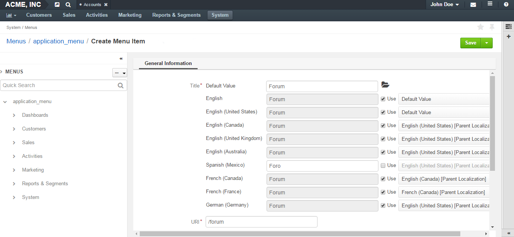

Customizing a Menu¶
Generic Principles¶
A menu may be multi-level like, for example, a default OroCRM and OroCommerce Management Console main menu. The child menu items are nested under parent menu items (e.g. Accounts, etc are nested under the Customers).

Menu items on the same level of hierarchy may be visually separated by a divider that looks like a horizontal line.

Dividers help you logically organize menu items.
Note
Some menus do not support displaying dividers (on a particular level in the tree, or in general). For example, if you add a divider to the top level of OroCRM and OroCommerce Management Console main menu (application_menu), the divider is not displayed.

Edit a Menu¶
To view and edit menu contents, click on the menu name or on the View icon in the corresponding row of the menu list.

On the page that opens, the menu item tree is shown in the left panel. Center is reserved for the menu item configuration.
Toggle the Menu Tree View¶
Expand / Collapse a Menu Tree¶
To expand / collapse a parent menu item, click an arrow in front of it.

To expand / collapse all menu items, click the ellipses dropdown menu in the upper-right corner of the left panel and click Expand All or Collapse All.

Rearrange Menu Items / Dividers¶
You can change the position of an item / divider in a menu by dragging and dropping it in the left panel. You can change the order of menu items at the same level as well as move an item / divider to the higher or lower level.
When you drag-and-drop items, pay attention to the arrow that shows where the item will be placed:
If an arrow points to the place between items, that is where the moved item will be placed.

If and arrow appears in front of a menu item, then the moved item will become a child of the item that the arrow points to.

Add a Menu Item¶
In the left panel, click a menu item which will be parent for the menu item that you create.
Click the Create dropdown in the upper-right corner of the page and click Create Menu Item on the list.

The created menu item will appear as the last one on the list of children of the same parent item. You can move it to the position that you need, as described in the Rearrange Menu Items / Dividers action description.
In the right part of the page, specify the following information:
Title—A name for the menu item. This is how this menu item will be represented in the menu.
Click the Translations icon to provide spelling for different languages. Click the Default Language icon to return to the single-language view.
URI—An web address of the page or resource that this menu item opens.
You can specify an absolute URI or one relative to the application URI (as specified in Application Settings in System Configuration).
If this menu item serves as a non-clickable parent that does not link itself to any resource (like Customers in the default main menu), type #.
Icon—From the list, select the icon that will denote the menu item.
Note
Sometimes menus (or menu levels) may not be supposed to display icons. For example, icons added to the first level of the main menu (application_menu) are displayed only when this menu is set to appear on the left.
Description—Type a short but meaningful description of the menu item.
Click the Translations icon to provide spelling for different languages. Click the Default Language icon to return to the single-language view.

Click Save to save your changes. If you wish to start creating another menu item right away, click Save and New in the upper-right corner of the page.
Important
You need to reload the page to see changes.
Add a Divider¶
- In the left panel, click a menu item which will be parent for the menu divider that you create.
- Click the Create dropdown in the upper-right corner of the page and click Create Divider on the list.

The created divider will appear as the last one on the list of children of the same parent item. You can move it to the position that you need, as described in the Rearrange Menu Items / Dividers action description.
Important
You need to reload the page to see changes.
Note
Some menus (or some menu levels) cannot display dividers. For example, if you add a divider to the first level of the main menu (application_menu), this divider will not be displayed.
Toggle Item Visibility¶
Find a Menu Item¶
To quickly find a menu item, enter its name into the search field and click the Search icon, or press Enter.